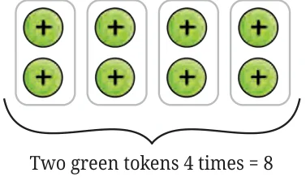
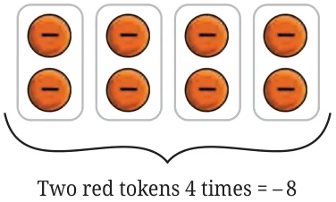
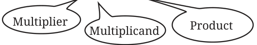
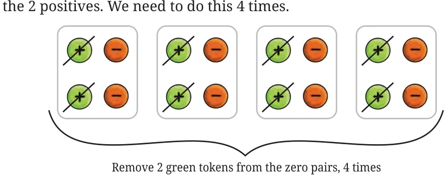
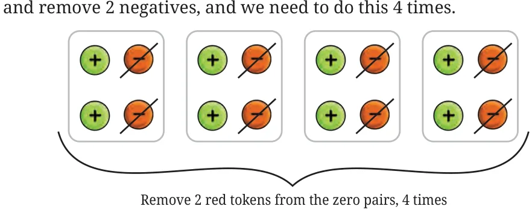

We used the token model to represent addition and subtraction of integers. We now explore how to model multiplication of integers using tokens.
Suppose we put some positive tokens into an empty bag as shown in the figure.
How many positives are in the bag now? There are 8 positives in the bag. We can see this as adding 2 positives to the bag 4 times. Thus, the operation is, \(4 \times 2 = 8\). We have seen this kind of multiplication of positive integers before. Can we use tokens to give meaning to multiplications like \(4 \times (-2)\)?

Let us see how. For every new operation, we start with an empty bag. \(4 \times (-2)\) can be interpreted as placing 2 negatives into an empty bag 4 times. We use red tokens for negatives, so we place 2 negatives into an empty bag 4 times.

There are now 8 red tokens or 8 negatives in the bag, meaning \(-8\).

\(4 \times (-2) = (-8)\).
Similarly find the values of \(4 \times (-6)\) and \(9 \times (-7)\). How can we interpret \((-4) \times 2\)?
When the multiplier is positive, we place tokens into the bag. When the multiplier is negative, we remove tokens from the bag. So, for \((-4) \times 2\), we need to remove two positives or two green tokens from the bag 4 times.
Why are we trying to remove green tokens and not red tokens? But there are no tokens in the bag, because we start with an empty bag. Just as in the case of subtraction, to remove 2 positives from an empty bag, we need to first place 2 zero pairs inside and then remove the 2 positives. We need to do this 4 times.

\((-4) \times 2 = -8\)
After removing the positives, 8 negatives are left in the bag. This is \(-8\). This shows that \((-4) \times 2 = -8\).
What happens when both the integers in the multiplication are negative? How do we model \((-4) \times (-2)\) with tokens?
For \((-4) \times (-2)\), we need to remove 2 negatives from the bag 4 times. Since there are no red tokens in the bag, we need to place 2 zero pairs and remove 2 negatives, and we need to do this 4 times.

\((-4) \times (-2) = 8\)
8 positives are left in the bag. This is \(+8\). So,
\(-4 \times -2 = +8\).
So far, we have established the following results by using tokens:
\(4 \times 2 = 8\),
\(4 \times (-2) = -8\),
\((-4) \times 2 = -8\), and
\((-4) \times (-2) = 8\).